Inside the Earth
Integrated evidence across space, time, depth and magnitude
DSC5002 project · fixed 2000–2025 USGS catalogue · preferred M ≥ 5 · 46,463 unique earthquakes
Research design and contribution
The project follows the five research questions in the supplied proposal. A single, sealed earthquake-only snapshot links descriptive statistics, maps, boundary distances, regional depth sections, magnitude-frequency curves and fixed-window event sequences. All substantive results below can be traced to the supplied tables and reproducible code.
Review decision: Member 2 required correction of event-type filtering, region scope and boundary approximation. Member 3 depth methods, Member 4 magnitude calculations and RQ5 case metrics were adopted after numerical checks. The supplied all-type extract contains 55 volcanic eruptions, four nuclear explosions and one landslide; those 60 are excluded. It does not demonstrate a 60-earthquake catalogue revision.
Data and processing
UTC interval [2000-01-01,2026-01-01); event type earthquake; magnitude at least 5. Source requests and hashes are preserved. All 46,463 event IDs are unique. Coordinates, magnitude and depth are present; extreme or negative depths were not removed mechanically. Geometry uses PB2002 and Natural Earth 110m. Complete requested files do not establish detection completeness.
Canonical data SHA256: 231b5b4fadf2d0d4eccfe4f03b8eb8489d225ff84e921f18d2b973af46d544ff. The original 30 baseline outputs remain unchanged. The final integration is a separate output version.
RQ1 / RQ2: Global geography
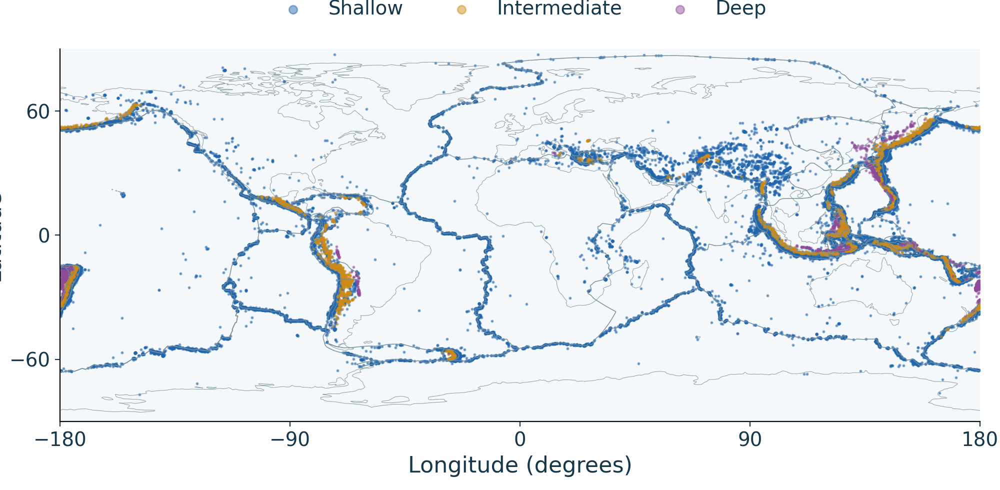
All 46,463 epicentres, coloured by depth; PB2002 and Natural Earth provide geographic context. No detection-completeness or area-normalized hazard claim.RQ2: Boundary proximity
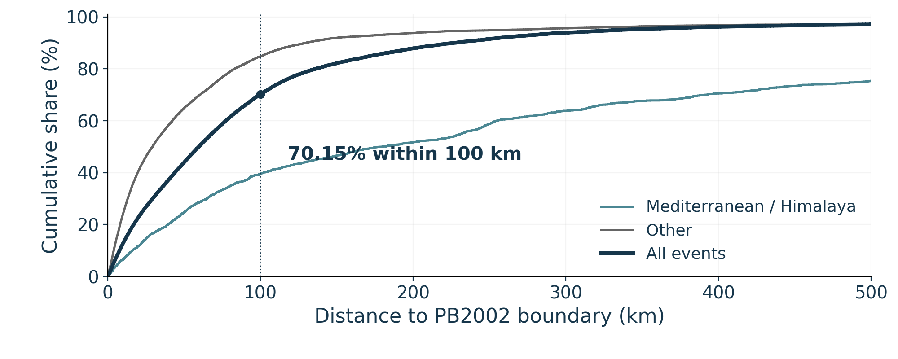
Shortest spherical distance to minor great-circle boundary arcs, R=6371.0088 km. Global and two selected regional ECDFs use their own denominators. Curves continue beyond the displayed 500 km range; no clipping of values to the endpoint.Median 59.68 km; 70.15% within 100 km; 87.90% within 200 km. The layer is dated and simplified; proximity is not geological uncertainty or a causal estimate.
RQ1: Annual variation
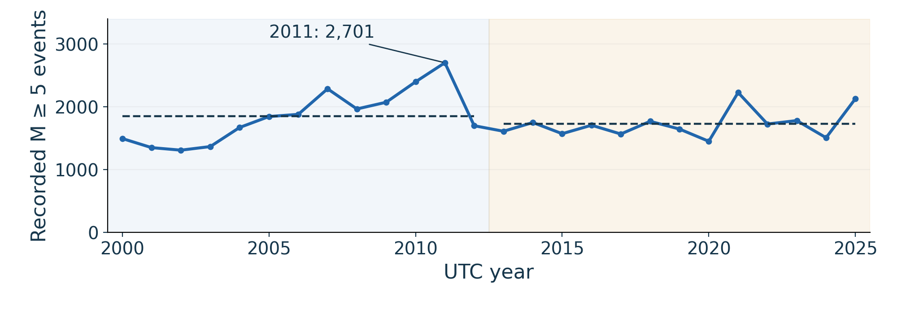
Raw annual counts and calendar-year period means. Exposure-adjusted late-versus-early rates are -6.63% at M≥5 and -15.42% at M≥6. The positive full-period M5 Sen slope illustrates sensitivity to the chosen summary.RQ1: Regional comparisons
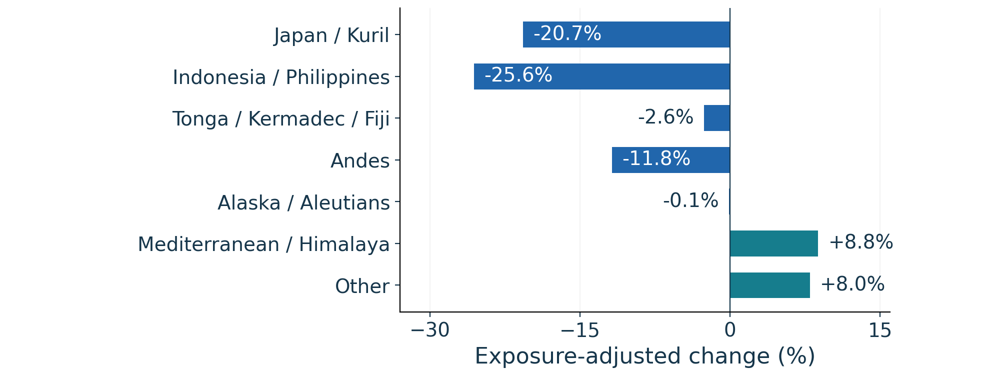
2013–2025 versus 2000–2012, rate per equal duration; regions are six configured boxes plus Other. Raw counts are not comparable hazard rates across unequal areas.RQ3: Regional depth composition
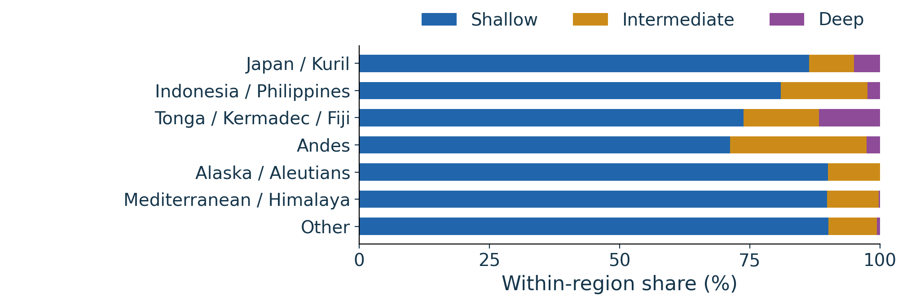
Known-depth denominators; shallow <70 km, intermediate 70–<300 km, deep ≥300 km. All records have depth. Four negative reported depths remain in the shallow class.
| region |
known_depth_n |
missing_depth_n |
shallow_n |
shallow_pct_known |
intermediate_n |
intermediate_pct_known |
deep_n |
deep_pct_known |
median_depth_km |
| Japan and Kuril |
4954 |
0 |
4280 |
86.4 |
426 |
8.6 |
248 |
5.0 |
33.0 |
| Indonesia and Philippines |
9313 |
0 |
7539 |
81.0 |
1547 |
16.6 |
227 |
2.4 |
33.0 |
| Tonga Kermadec Fiji |
8904 |
0 |
6571 |
73.8 |
1286 |
14.4 |
1047 |
11.8 |
33.0 |
| Andes |
3769 |
0 |
2684 |
71.2 |
987 |
26.2 |
98 |
2.6 |
35.0 |
| Alaska and Aleutians |
1547 |
0 |
1392 |
90.0 |
155 |
10.0 |
0 |
0.0 |
26.2 |
| Mediterranean and Himalaya |
2468 |
0 |
2218 |
89.9 |
243 |
9.8 |
7 |
0.3 |
10.0 |
| Other |
15508 |
0 |
13972 |
90.1 |
1439 |
9.3 |
97 |
0.6 |
10.0 |
| All groups |
46463 |
0 |
38656 |
83.2 |
6083 |
13.1 |
1724 |
3.7 |
23.7 |
RQ3: Two local cross sections
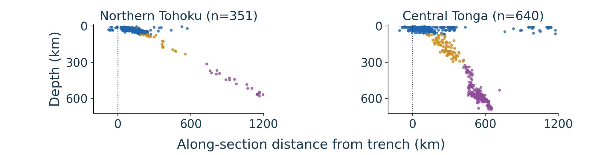
Adopted Member 3 methods: finite -200 to +1200 km route, ±100 km swath, parent-region restriction, spherical trench intersection. Distance and depth use equal scales. Profiles were explored and selected for illustration; their shapes are not an independent test of slab structure.
| region |
local_section |
half_width_km |
known_depth_n |
shallow_n |
intermediate_n |
deep_n |
| Japan and Kuril |
Northern Tohoku |
100 |
351 |
309 |
21 |
21 |
| Indonesia and Philippines |
East Java |
100 |
59 |
35 |
16 |
8 |
| Tonga Kermadec Fiji |
Central Tonga |
100 |
640 |
369 |
85 |
186 |
| Andes |
Northern Chile |
100 |
185 |
51 |
131 |
3 |
| Alaska and Aleutians |
Central Aleutians |
100 |
129 |
118 |
11 |
0 |
| Mediterranean and Himalaya |
Western Crete |
100 |
57 |
52 |
5 |
0 |
| Other |
Southern Hikurangi, New Zealand |
100 |
73 |
58 |
15 |
0 |
Route maps, endpoint coordinates, seven profiles and regional 3D views are available in the integrated dashboard. The regional 3D view uses a documented display approximation and vertical exaggeration; display sampling does not alter table counts.
RQ4: Magnitude and frequency
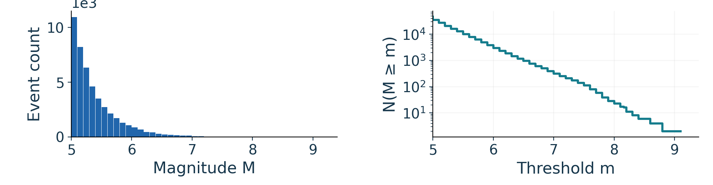
The histogram uses 0.1 magnitude bins; cumulative N(M≥m) includes threshold ties. Counts decrease across thresholds, with 3,874 records ≥6, 387 ≥7, 28 ≥8 and two ≥9. Mixed preferred magnitude types are not converted into a homogeneous Mw scale.RQ5: Three selected major events
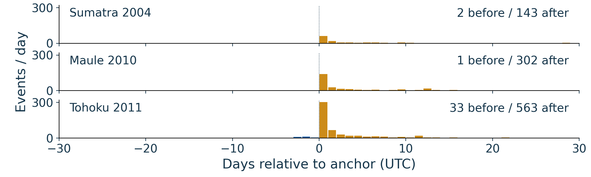
UTC offsets relative to each largest-on-date anchor. Windows [-30,0) and [0,30) days, distance ≤500 km, anchor excluded. All are fully observed; no causal aftershock classification.
| name |
before_count |
after_count |
peak_after_day |
peak_day_count |
first3_days_share_pct |
largest_post_window_magnitude |
| Sumatra Andaman 2004 |
2 |
143 |
0 |
62 |
60.140 |
6.7 |
| Maule Chile 2010 |
1 |
302 |
0 |
140 |
60.927 |
7.4 |
| Tohoku Japan 2011 |
33 |
563 |
0 |
303 |
70.870 |
7.9 |
Play the animation
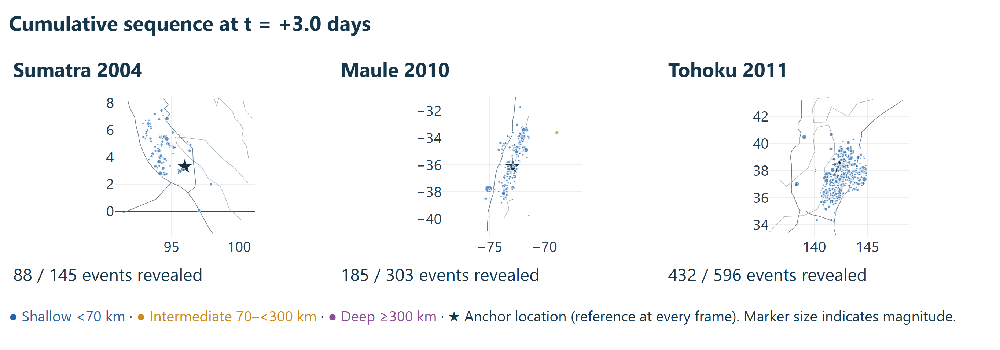
Three synchronized cases at +3 days. Revealed totals include the before-window observations: 88/145, 185/303 and 432/596. The anchor is excluded; its star is a reference location at every frame. Maps preserve approximate kilometre aspect at each anchor latitude.Comparability and sensitivity
We compare 13 calendar years against 13 calendar years with 4,749 and 4,748 days of exposure. Mw-family composition changes from 73.45% to 55.05%; error-field availability and concentrations at exact depths change too. These signals limit a direct interpretation as changing physical activity. The M≥5 sample cannot establish completeness below M5.
All 28 M≥8 anchors define a sensitivity union of 30-day, 500 km windows including those anchors. Removing 3,090 unique observations changes the M5 rate contrast to -3.37%. This is a window-removal sensitivity, not a declustered catalogue. See the full temporal report for threshold, review-status, region-box and annual-slope sensitivity results.
Magnitude-type and illustrative energy supplement
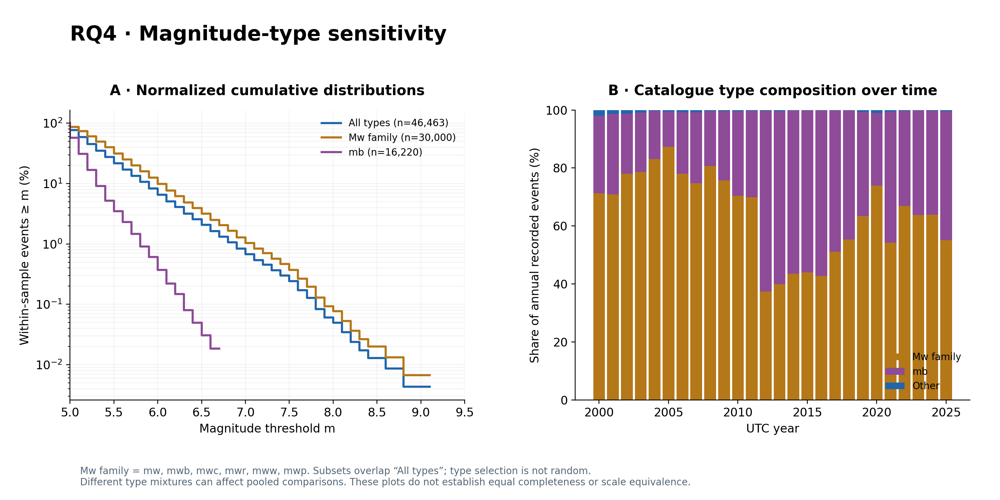
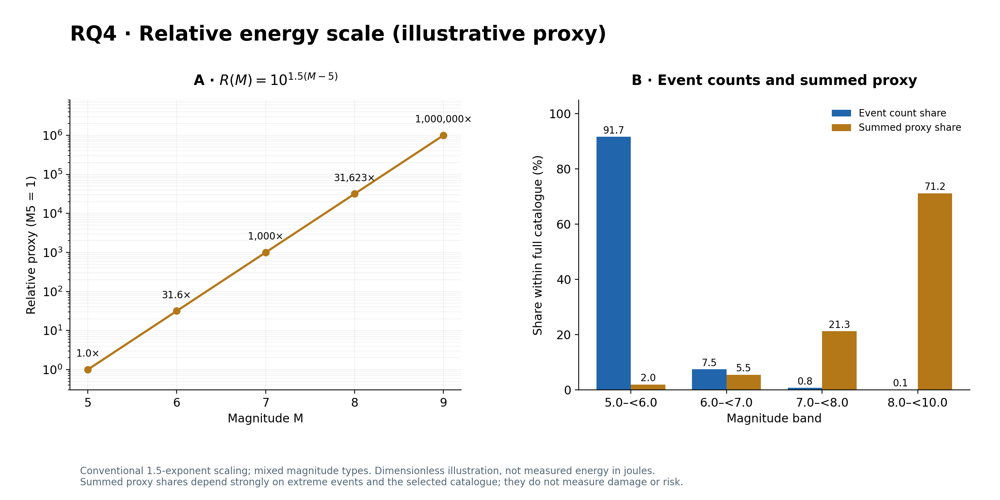
The 1.5-exponent relative proxy is dimensionless and uses mixed magnitude scales. Its summed shares are dominated by extreme events; they are not measured energy in joules, damage or hazard.
Association and uncertainty
Pooled Spearman rho is -0.00377 for magnitude/depth and 0.01552 for magnitude/boundary distance. Near-zero pooled monotonic association does not rule out subgroup relationships. The supplied correlations table includes region and period strata. No independent-event p-values or causal claims are inferred from clustered seismic sequences.
Conclusion
Recorded events concentrate near mapped boundaries, regional depth distributions differ markedly, larger magnitudes are rarer, and selected large-event windows exhibit strongly concentrated post-window counts. Catalogue composition, selected windows, geographic definitions and simplified geometry remain essential to interpretation.
Sources and acknowledgements
USGS FDSN catalogue; Bird (2003), PB2002; GeoJSON conversion by Hugo Ahlenius (ODC-By); Natural Earth (public domain). RQ3 adapted from Member 3; RQ4 adapted from HUANG Youkun; case animation adapted from the RQ5 contributor. Full names not supplied are not invented.